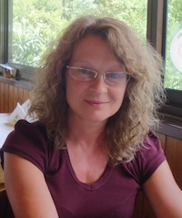

Amid the recent COVID-19 situation, the organization committee decided that QONFEST 2020, will be organized on-line. Accepted papers will be published as planned, by September 2020, but no physical meeting/presentations will take place. We plan that the authors will record their talks and discuss them with the conference participants online.
Invited Speakers
Annabelle McIver - Macquarie University, Australia
Plenary Speaker for QONFEST 2020
September 1, 2020, 11:00-12:00 CET, Streaming on ZOOM.
On Privacy and Accuracy in Data Releases
Abstract In this talk we study the relationship between privacy and accuracy in the context of correlated datasets. We use a model of quantitative information flow to describe the the trade-off between privacy of individuals’ data and and the utility of queries to that data by modelling the effectiveness of adversaries attempting to make inferences after a data release. We show that, where correlations exist in datasets, it is not possible to implement optimal noise-adding mechanisms that give the best possible accuracy or the best possible privacy in all situations. Finally we illustrate the trade-off between accuracy and privacy for local and oblivious differentially private mechanisms in terms of inference attacks on medium-scale datasets.
Short Bio: Annabelle McIver is a professor of Computer Science at Macquarie University in Sydney.
Annabelle trained as a mathematician at Cambridge and Oxford Universities.
Her research uses mathematics to prove quantitative properties of programs,
and more recently to provide foundations for quantitative information flow
for analysing security properties. She is co-author of the book "Abstraction,
Refinement and Proof for Probabilisic Systems", and of the forthcoming title
"The Science of Quantitative Information Flow”.
Tom Henzinger - IST, Austria
Keynote Speaker for CONCUR, QEST, FMICS
September 2, 2020, 16:30-17:30 CET, Streaming on ZOOM.
A Survey of Bidding Games on Graphs
Abstract A graph game is a two-player zero-sum game in which the players move a token throughout a graph to produce an infinite path, which determines the winner or payoff of the game. In bidding games, both players have budgets, and in each turn, we hold an “auction” (bidding) to determine which player moves the token. In this survey, we consider several bidding mechanisms and study their effect on the properties of the game. Specifically, bidding games, and in particular bidding games of infinite duration, have an intriguing equivalence with random-turn games in which in each turn, the player who moves is chosen randomly. We show how minor changes in the bidding mechanism lead to unexpected differences in the equivalence with random-turn games.
Short Bio:
Tom Henzinger is president of IST Austria (Institute of Science and Technology Austria). He holds a Dipl.-Ing. degree from Kepler University in Linz, a Ph.D. degree from Stanford University (1991), and Dr.h.c. degrees from Fourier University in Grenoble and from Masaryk University in Brno. He was Assistant Professor at Cornell University, Professor at the University of California, Berkeley, Director at the Max-Planck Institute for Computer Science in Saarbrucken, and Professor at EPFL. His research focuses on modern systems theory, especially models, algorithms, and tools for the design and verification of reliable software and embedded systems. His HyTech tool was the first model checker for mixed discrete-continuous systems. He is an ISI highly cited researcher, a member of Academia Europaea, a member of the German and Austrian Academies of Sciences, and a Fellow of the AAAS, the ACM, and the IEEE. He received the Robin Milner Award of the Royal Society, the EATCS Award of the European Association for Theoretical Computer Science, the Wittgenstein Award of the Austrian Science Fund, and an ERC Advanced Investigator Grant.
Alessandro Abate - University of Oxford, UK
Keynote Speaker for FORMATS
September 2, 2020, 16:30-17:30 CET, Streaming on ZOOM.
TBA
Abstract TBA
Short Bio:
Alessandro Abate is Professor of Verification and Control in the Department of Computer Science at the University of Oxford. Earlier, he has done research at SRI International and at Stanford University, and has been an Assistant Professor at the Delft Center for Systems and Control, TU Delft. He has received a Laurea degree from the University of Padova and a MS/PhD from UC Berkeley.
Stefan Resch - Thales, Austria
Keynote Speaker for FMICS
September 2, 2020, 13:00–13:55 CET, Streaming on ZOOM.
Applying Formal Methods in Industrial Railway Applications at Thales
Abstract This talk provides an overview of various applications of formal methods at Thales in the context of ground transportation and presents one of the use cases in detail. For each of the presented methods the motivation and corresponding fields of application are discussed. The use case at focus of this talk is the application of a formal method for extending the set of supported redundancy architectures of the TAS Control Platform. It is shown how property-driven design and TLA+ have been used in this context to increase the confidence in the design and implementation and how the overall approach has been integrated in the development process in accordance with the international railway safety standard CENELEC EN 50128.
Short Bio:
Stefan Resch is system architect at Thales in Vienna. He received his PhD degree in Computer Science from the Vienna University of Technology in 2015 on composability for fail-safe systems. Currently, he is working as system architect for the TAS Control Platform, a safety-critical fault-tolerant computing platform for railway control applications which is used in 80% of Thales' safety critical solutions for ground transportation. His main focus are novel safety mechanisms and distributed algorithms for safety-critical systems in the railway domain.
Roderick Bloem - TU Graz, Austria
Keynote Speaker for CONCUR, FORMATS, FMICS
September 3, 2020, 16:30-17:30 CET, Streaming on ZOOM.
Safe Reinforcement Learning using Probabilistic Shields
Abstract This paper concerns the efficient construction of a safety shield for reinforcement learning. We specifically target scenarios that incorporate uncertainty and use Markov decision processes (MDPs) as the underlying model to capture such problems. Reinforcement learning (RL) is a machine learning technique that can determine near-optimal policies in MDPs that may be unknown before exploring the model. However, during exploration, RL is prone to induce behavior that is undesirable or not allowed in safety- or mission-critical contexts. We introduce the concept of a probabilistic shield that enables RL decision-making to adhere to safety constraints with high probability. We employ formal verification to efficiently compute the probabilities of critical decisions within a safety-relevant fragment of the MDP. These results help to realize a shield that, when applied to an RL algorithm, restricts the agent from taking unsafe actions, while optimizing the performance objective. We discuss tradeoffs between sufficient progress in the exploration of the environment and ensuring safety. In our experiments, we demonstrate on the arcade game PAC-MAN and on a case study involving service robots that the learning efficiency increases as the learning needs orders of magnitude fewer episodes.
Short Bio:
Roderick Bloem received his M.Sc. degree in Computer Science from Leiden University, the Netherlands in 1996, and his Ph.D. degree in Computer Science from the University of Colorado at Boulder, in 2001. From 2002 until 2008, he was an Assistant at Graz University of Technology, Graz, Austria. From 2008, he has been a full professor of Computer Science at the same university. He has published over 100 peer reviewed papers in formal verification, reactive synthesis and security. He leads the Austrian National Research Network on Rigorous Systems Engineering and has organized events including the Computer Aided Verification conference and Formal Methods in Computer Aided Design.
Evgenia Smirni - College of William and Mary, VA, USA
Keynote Speaker for QEST
September 3, 2020, 16:30-17:30 CET, Streaming on ZOOM.
Machine Learning for Reliability Analysis of Large Scale Distributed Systems
Abstract As distributed systems dramatically grow in terms of scale, complexity, and usage, understanding the hidden interactions among system and workload properties becomes an exceedingly difficult task. Machine learning models for prediction of system behavior (and analysis) are increasingly popular but their effectiveness in answering what and why is not always the most favorable. In this talk I will present two reliability analysis studies from two large, distributed systems: one that looks into GPGPU error prediction at the Titan, a large scale high-performance-computing system at ORNL, and one that analyzes the failure characteristics of solid state drives at a Google data center and hard disk drives at the Backblaze data center. Both studies illustrate the difficulty of untangling complex interactions of workload characteristics that lead to failures and of identifying failure root causes from monitored symptoms. Nevertheless, this difficulty can occasionally manifest in spectacular results where failure prediction can be dramatically accurate.
Short Bio:
Evgenia Smirni received the Diploma degree in computer science and informatics from the University of Patras, Greece, in 1987 and the Ph.D. degree in computer science from Vanderbilt University in 1995. She is the Sidney P. Chockley Professor of computer science at William and Mary, Williamsburg, VA, USA. Her research interests include queuing networks, stochastic modeling, Markov chains, resource allocation policies, Internet and multi-tiered systems, storage systems, cloud computing, workload characterization, performance prediction and reliability of distributed systems and applications, applied machine learning. She has served as the Program Co-Chair of QEST'05, ACM Sigmetrics/Performance'06, HotMetrics'10, ICPE'17, DSN'17, HPDC'19, and SRDS'19. She also served as the General Co-Chair of QEST’10 and NSMC’10. She is an ACM Distinguished Scientist and an elected member to the IFIP W.G. 7.3.
Catuscia Palamidessi - INRIA, France
Keynote Speaker for CONCUR
September 4, 2020, 16:30-17:30 CET, Streaming on ZOOM.

Modern Applications of Game-Theoretic Principles
Abstract Game theory is the study of the strategic behavior of rational decision makers who are aware that their decisions affect one another. Its simple but universal principles have found applications in the most diverse disciplines, including economics, social sciences, evolutionary biology, as well as logic, system science and computer science. Despite its long-standing tradition and its many advances, game theory is still a young and developing science. In this paper, we describe some recent and exciting applications in the fields of machine learning and privacy.
Short Bio:
Catuscia Palamidessi is a director of research at INRIA. She is the head of the COMETE (Concurrency, Mobility and Transactions)
team at the Inria Saclay - Île-de-France research center, which is studying privacy, security, and how information circulates
on social network and the risks related to that.
Her research has led to the production of different tools like Location Guard, an obfuscation mechanism that takes the form of
a browser extension and helps protect user locations.
Her work led to numerous academic and industrial collaborations and has recently been awarded with an ERC Advanced Grant 2019.
Sponsors
Platinum
Silver

Bronze